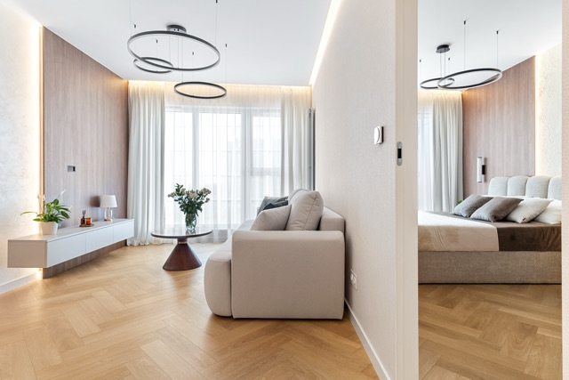
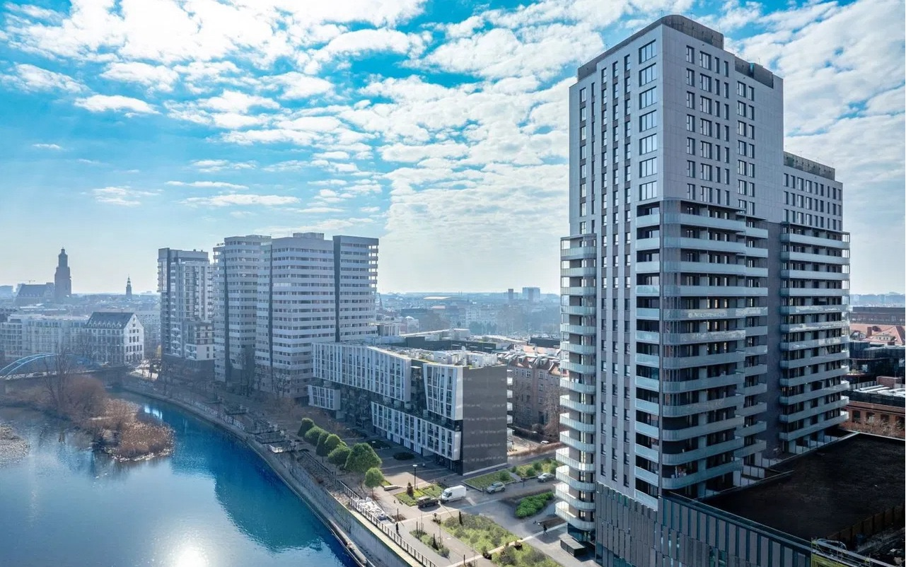
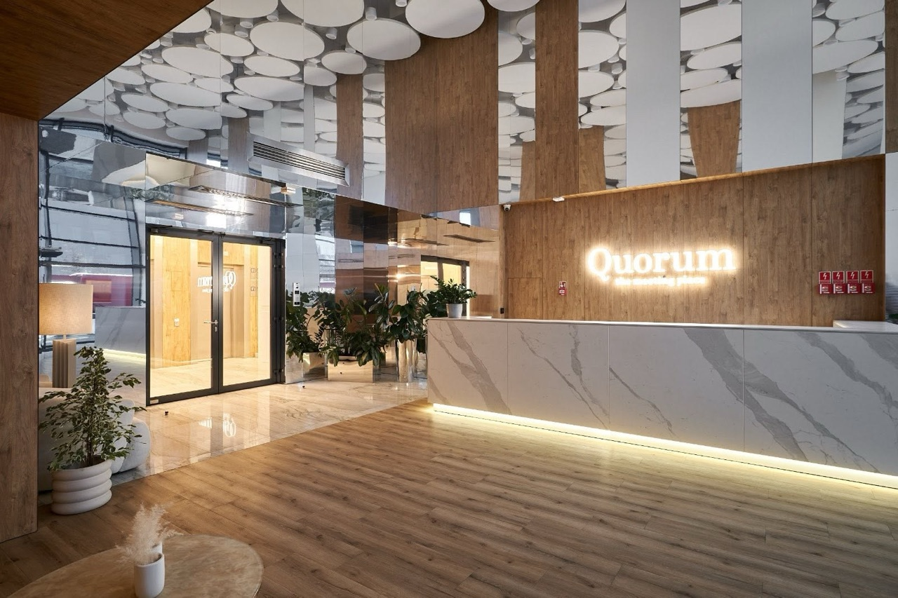
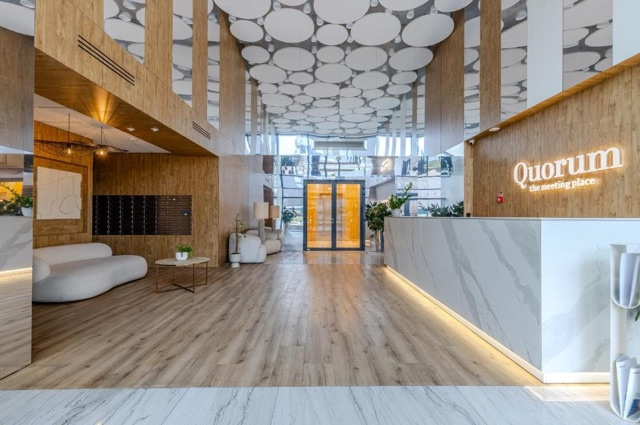

21/23 piętroCiepłe drewno i kamień
- Powierzchnia
- 44,70 m²
- Pokoje
- 2
- Wystawa
- zachodnia
1 129 000 zł 25 257 zł/m²
Szczegóły i zdjęciaWrocław · Stare Miasto · nad Odrą
W pełni wykończone mieszkania na 21. i 23. piętrze wieżowca Quorum Apartments – z widokiem na Odrę, panoramę miasta i Quorum Tower. Gotowe do zamieszkania od zaraz.

Oferta
Mieszkanie na tej wysokości to we Wrocławiu prawdziwa rzadkość – tylko trzy budynki w całym mieście oferują apartamenty tak wysoko.
Dla kogo
Bezobsługowa lokata kapitału. W budynku działa kilku operatorów, którzy zajmą się wynajmem krótko- i długoterminowym.
Znakomita lokalizacja w sąsiedztwie Uniwersytetu Wrocławskiego i świetna komunikacja miejska w każdą część miasta.
Wygodny, funkcjonalny układ w tętniącym życiem sercu miasta, zaledwie kilka kroków od Rynku.
Budynek
Nowoczesny, przeszklony, 23-piętrowy wieżowiec przy samym nabrzeżu Odry i pięknej promenadzie.



LobbyLokalizacja
Szczepin, Stare Miasto – wszystko, czego potrzebujesz, w zasięgu spaceru.
Okolica
Mieszkasz między rzeką a Starym Miastem. Rano spacer po bulwarach, w południe kawa w Nadodrzu, wieczorem koncert albo kolacja w Rynku – i wszystko to bez samochodu.
Budynek stoi przy nabrzeżu i promenadzie – idealnej na poranny jogging, rower albo wieczorny spacer o zachodzie słońca. Wrocław to miasto wysp i ponad stu mostów, a latem z przystani wypływają statki wycieczkowe, kajaki i rowery wodne.
Około kilometra do jednego z najpiękniejszych rynków w Europie: gotycki Ratusz, kolorowe kamienice, Plac Solny z kwiaciarniami i setki wrocławskich krasnali do odnalezienia.
Narodowe Forum Muzyki, Teatr Muzyczny Capitol, Opera Wrocławska i dziesiątki galerii. Miasto, które było Europejską Stolicą Kultury 2016, żyje festiwalami przez cały rok.
Restauracje i kawiarnie 70 m od drzwi. Kilka minut dalej klimatyczne Nadodrze i ulica Ruska z Pasażem Pokoyhof oraz Neon Side Gallery – miejscami, gdzie Wrocław spotyka się wieczorami.
Ostrów Tumski z katedrą i latarnikiem zapalającym gazowe latarnie, Aula Leopoldina Uniwersytetu, Arsenał Miejski. Najstarsza część miasta zaczyna się praktycznie za rogiem.
Żabka i piekarnia na parterze, tramwaje i autobusy z Placu Jana Pawła II w każdą stronę miasta, stacje roweru miejskiego i ścieżki wzdłuż rzeki. Samochód staje się dodatkiem, nie koniecznością.
Formalności
Kontakt
Zadzwoń lub napisz SMS – chętnie pokażę oba apartamenty i odpowiem na pytania.
+48 518 416 420Marcin